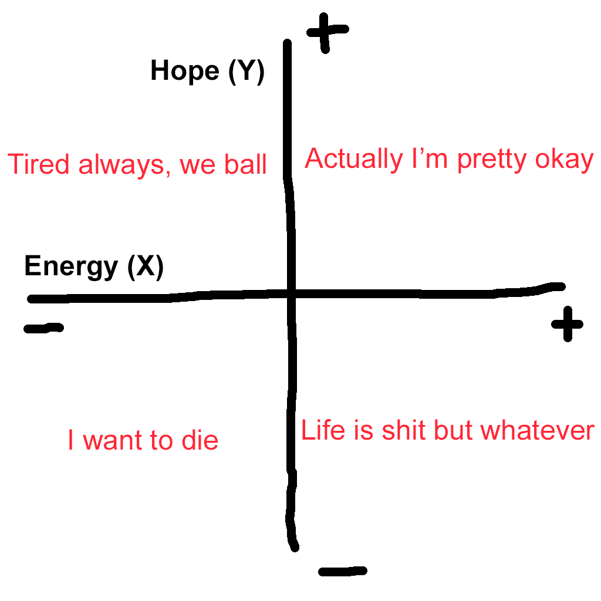

What is up chat. My name is Yetch and I am a certified psychologist from the University of Psychology. I love depressed rambling so I guess this'll be one of my repositories for it. Maybe formatted like a basic blog, with the most recent thing at the top? We shall see.
February 27 2024
It's been a while since I've felt as suicidal as I did today and yesterday ("a while" being months or years). But here we are, I guess. My anxiety and depression are both the highest they've been in a while as well (no surprise there, I guess, considering the whole depression thing), even though I'm not doing particularly badly in school. Of course, school remains a large part of the stress (when hasn't it been?), but a large part of the anxiety I've been feeling about it is either unfounded or exaggerated. It makes me wonder if Ash's being gone has impacted me more than I initially thought, and, in the same vein, how bad this might all be had he not left. I guess there's no point in thinking too much about it in either case- it's not like I can do anything to change any of the variables.
Honestly though, at the most basic level, I think whether I feel suicidal or not, or how suicidal I feel, depends on just a couple of factors: my level hope for the future, and my level of energy (specifically, energy to try new strategies, to keep going, etc). Kind of like this, if you'll excuse my shitty chart-making skills:
Right now I feel about as far in the bottom left quadrant as I think I possibly could. Maybe more than ever? That seems unlikely, knowing how I was doing during quarantine, and it's a bit of a moot point anyways (again, because I can't change anything about this simply by putting it into perspective), but there's some possibility. I'll admit, it does interest me a bit to know if this is the worst it's been, whether it helps or not. But oh, well. Point is, I want this all to end. There's so much more I want to write, so much more that I have in my head that wants and needs to get out (though a webpage that nobody will read might not really cut it), but I'm also incredibly exhausted mentally and socially, and I need to stop working on this website. So I guess that's all for tonight.